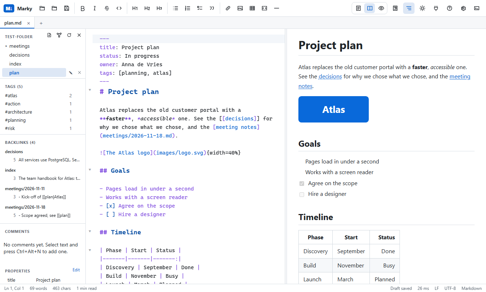
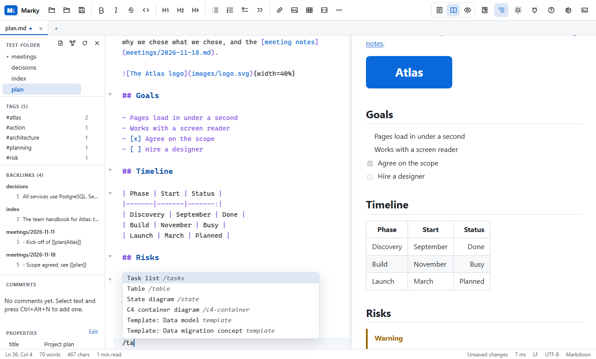
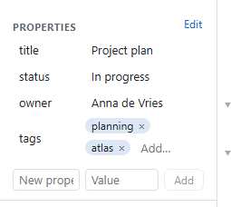
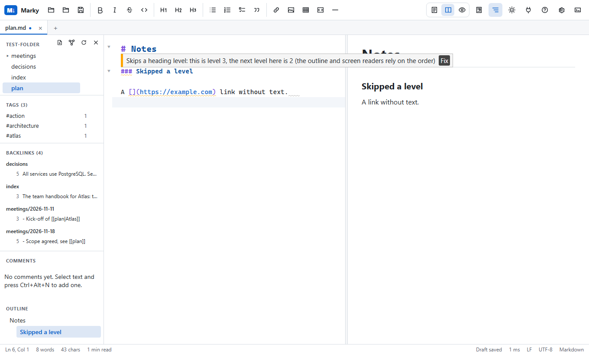
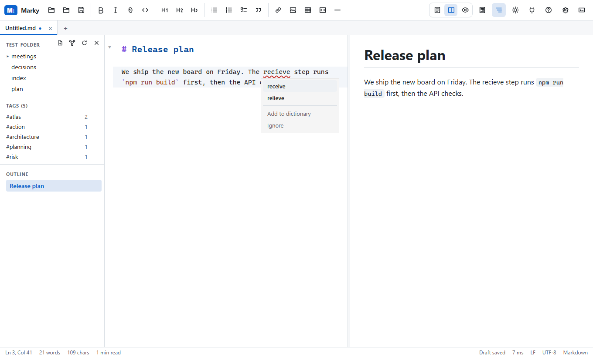

3. Writing
Markdown in a nutshell
Markdown is plain text with a few symbols for formatting. Marky follows GitHub's flavour (CommonMark with tables, task lists, strikethrough and footnotes).
| Write | Get |
|---|---|
# Title, ## Section … ###### |
Headings (they also make the Outline) |
**bold**, _italic_, ~~strike~~, `code` |
bold, italic, code |
- item, 1. item, - [ ] task |
Lists and checklists |
> quote |
A quote |
> [!NOTE] (TIP, IMPORTANT, WARNING, CAUTION) |
A coloured callout |
[text](https://…) |
A link |
 |
A picture |
```js … ``` |
Code with colours |
$x^2$, $$ … $$ |
Math |
Text[^1] and [^1]: the note |
A footnote |
--- (alone, between blank lines) |
A horizontal line, and a new slide when presenting |

Enter continues a list (and a numbered list counts on); Enter on an empty item ends the list. Tab and Shift+Tab indent and outdent list items.
Formatting shortcuts
| Action | Keys |
|---|---|
| Bold, italic, inline code | Ctrl+B, Ctrl+I, Ctrl+E |
| Strikethrough | Ctrl+Shift+X |
| Heading 1–6 | Ctrl+Alt+1 … 6 |
| Bulleted, numbered, task list | Ctrl+Shift+8, 7, 9 |
| Tick a task | Ctrl+Enter |
| Quote | Ctrl+Shift+. |
| Link | Ctrl+K (or paste an address over selected text) |
| Code block | Ctrl+Alt+C |
Shortcuts toggle: Ctrl+B on bold text makes it plain again.
The / menu
Type / at the start of a line (or after a space) for a menu of things to insert: headings, lists, a table, callouts, a code block, Mermaid and other diagrams, math, a divider, an image, a link, today's date, contents, and your templates. Keep typing to narrow it down (/tab → Table) and press Enter. Tab jumps between the parts to fill in.

Templates
New note from template… makes a note from a template; Insert template… puts one at the cursor. Built in are meeting notes, decision record, project brief and daily note; the app design kit (app spec, user story, screen with mockup, data model, API endpoint, see AI agents); and, with Architecture work on, concept templates (security, operations, integration, data migration, test). Your own templates are Markdown files in a folder called templates in the open folder. They can use:
| Placeholder | Becomes |
|---|---|
{{date}}, {{time}}, {{weekday}} |
Today's date, the time, the day of the week |
{{title}} |
The note's name |
{{cursor}} |
Where you start typing |
Properties
Front matter is a block of YAML at the very top of a note, between two --- lines. Marky shows it as Properties in the sidebar, where you can edit it without touching YAML:

- Text and numbers in fields, yes/no as a checkbox, lists such as
tagsas chips (type and press Enter to add, × to remove). - Click a property's name to rename it; the row at the bottom adds one.
- Comments and formatting in the YAML are kept, and every change can be undone with Ctrl+Z.
Some properties mean something to Marky: title (exports and websites), tags, word-goal, bibliography and citation-style (Citations), publish: false and draft: true (publishing a website).
Pasting
- Pictures: paste a screenshot or drop an image file. In a folder, it's saved in
assets/next to the note and linked. Large pictures are made smaller (WebP, at most 1920 px wide; Settings › Editor). - From web pages, Word and Google Docs: formatted text becomes clean Markdown (headings, bold, links, lists, tables, code). Ctrl+Shift+V pastes plain text.
- An address over selected text makes a link.
Checks while you type
Marky underlines common problems: a skipped heading level, an empty heading, spaces at the end of a line, a link without text, a code block that isn't closed, and (with a folder open) links to notes or files that don't exist. Point at the underline for an explanation and, where the fix is clear, a Fix button. Check links in folder… lists every broken link in the folder.

The status bar also warns about pictures without a description (alt text), which screen-reader users need.
Spelling
With Spellcheck on (Settings › Editor), words Marky doesn't know get a red wavy line. Click one, or put the cursor in it and press Ctrl+., for suggestions, Add to dictionary (your own words, kept on this computer) or Ignore (until you close Marky). English and Dutch are built in, so spelling works the same in the browser and the desktop app, also offline. The language is the note's lang: property (en or nl), else Settings › Editor › Spelling language, else the app's language.
Code, links and addresses, file names, tags, @mentions, front matter, math and words like camelCase, NASA or v2 are skipped, so technical notes don't light up.

Sections, multiple cursors and the word goal
- Fold a section with the ▾ next to its heading. Alt+Shift+↑/↓ on a heading moves the whole section.
- Several cursors: Ctrl+click adds a cursor, Alt+drag selects a column, Ctrl+D selects the next occurrence of the word, Ctrl+Alt+↑/↓ adds a cursor above or below.
- Word goal: Set a word goal for this note…; the status bar shows your progress and says when you've reached it.
The writing assistant (desktop)
Select text and press Ctrl+Alt+R: improve it, make it shorter, fix spelling and grammar, make it more formal or casual, translate it, or give your own instruction. The AI's version appears as a change you accept or reject part by part. It uses Claude Code, OpenAI Codex or Gemini CLI, see AI agents. Ask the AI to summarise the note (or selection) and Ask the AI to describe images without alt text work the same way.